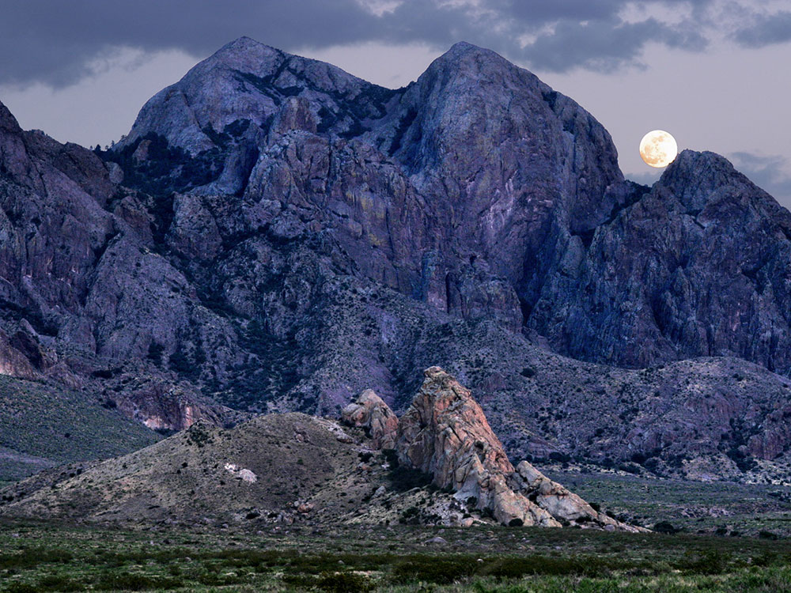

.jpg){kind=link}
Monument surrounding the city of Las Cruces, and includes several mountain ranges of the Chihuahuan Desert
General Information
Open year-round
How to Get There
From Las Cruces (15 mi or less): Take University Ave or US‑70 east, then follow Dripping Springs Road or Baylor Canyon Road to access trailheads and visitor areas within the monument.
Overview
Organ Mountains-Desert Peaks National Monument protects nearly half a million acres of rugged mountains, desert basins and volcanic landscapes around Las Cruces in southern New Mexico. The jagged granite spires of the Organ Mountains, which resemble the pipes of a church organ, rise more than 9,000 feet above the Chihuahuan Desert, and the monument also includes the Desert Peaks, the Doña Ana Mountains, the Potrillo Mountains and Kilbourne Hole. President Barack Obama established the monument in 2014 to protect its scenic beauty and its rich archaeological, historic and ecological resources, which include petroglyphs, Apache and frontier history, and the Billy the Kid era. The monument is managed by the Bureau of Land Management, and it is popular because it offers hiking, camping, climbing and dramatic desert scenery just minutes from a city.
Access
The monument surrounds Las Cruces and is easily reached by car, with the Organ Mountains rising directly east of town. Dripping Springs Natural Area is about 10 miles east of the city via Dripping Springs Road, and Aguirre Spring Recreation Area is about 20 miles east of Las Cruces, off US-70 and a paved road that climbs into the mountains. Baylor Canyon Road, which can be rough in places, provides access to the Baylor Canyon and Baylor Pass trails. Remote areas such as the Potrillo Mountains and Kilbourne Hole are reached by long gravel and dirt roads that require a high-clearance vehicle.
Seasons
Fall through spring is the most pleasant time to visit, when daytime temperatures are mild and the mountains offer excellent hiking and camping. Summers are extremely hot in the lowlands, and afternoon monsoon storms from July through September can flood washes and make dirt roads impassable. Winter brings cool days, cold nights and occasional snow on the peaks, which turns the Organ Needle and other summits white. Wildflowers and blooming desert plants appear after wet winters and in spring, and some access roads may close after storms.
Things to Do
Explore a Dramatic Desert Mountain Landscape
Organ Mountains-Desert Peaks National Monument is a large, varied landscape of granite peaks, desert grasslands and volcanic fields. Visitors can hike, camp, climb, bike and explore history in a monument that sits right next to a growing city.
Hike to the Ruins at Dripping Springs
The Dripping Springs Natural Area offers an easy trail to the ruins of a 19th-century resort and sanatorium set at the foot of the mountains. A visitor center provides exhibits on the area's history and wildlife, and shorter trails branch out from the main route.
Camp and Hike at Aguirre Spring
The Aguirre Spring Recreation Area is a campground and trail hub set among tall granite spires, with views over the Tularosa Basin toward White Sands. Hiking trails lead into the high country, including routes to Baylor Pass and the base of the Organ Needle.
Climb and Scramble in the Organ Mountains
The steep granite walls and spires are a destination for rock climbers and scramblers. Routes range from short sport climbs to long multi-pitch ascents, and the rock is best climbed in the cooler seasons.
Discover Petroglyphs and Frontier History
Hundreds of archaeological sites in the monument include petroglyphs and the traces of earlier people. The area is also tied to Apache history and to figures such as Geronimo and Billy the Kid.
Top Trails
Dripping Springs Trail
Length: Approximately 3 miles round trip
Elevation Gain: Moderate
Difficulty: Easy to Moderate
This popular trail follows an old road to the ruins of a historic resort and sanatorium with views of the Organ Mountains. It is a good option for families and offers a mix of history, canyon scenery and desert plants.
Pine Tree Trail
Length: Approximately 4.8 miles loop
Elevation Gain: Moderate
Difficulty: Moderate
This loop starts at the Aguirre Spring campground and climbs through oak and pine woodlands to views of the Tularosa Basin and the Organ spires. It is a good choice for those who want a rewarding day hike close to camp.
Baylor Pass Trail
Length: Approximately 6 miles one way
Elevation Gain: Substantial
Difficulty: Moderate to Strenuous
This route crosses the Organ Mountains between Baylor Canyon and Aguirre Spring, with wide views of both sides of the range. It is a longer hike best done with a shuttle or as an out-and-back section.
Visitor Centers
The Dripping Springs Visitor Center, run by the Bureau of Land Management, is the main visitor facility and is located at the trailhead of the Dripping Springs Natural Area east of Las Cruces. It has exhibits on the history, wildlife and geology of the monument, maps, restrooms and a small bookstore, and staff and volunteers can offer trail suggestions. Hours are limited and vary by season, so check the BLM website before visiting. Fees may apply for day use at developed areas such as Dripping Springs and Aguirre Spring.
Camping and Lodging
The Aguirre Spring Campground is the main developed campground, with tent and small RV sites, picnic tables and views of the Organ spires, and dispersed camping may be allowed in some remote areas. There is no lodging in the monument. Las Cruces is only 10 to 25 minutes away and has a wide range of hotels, restaurants and shops, and the historic village of Mesilla offers inns and dining about 20 minutes from the mountains. El Paso, Texas, about an hour southeast, offers additional options. Check each property's website for current availability.
Protected areas
Organ Mountains-Desert Peaks protects many archaeological and cultural sites of interest. The Aden Lava Flow Wilderness Study Area is here and there are 243 known archaeological sites within the monument, including some of the earliest Native American settlements and petroglyphs known from three different tribes. The land also includes Shelter Cave and Conkling Cavern. Fossils of ground sloths have been found in the area.
More recently the land was used by William H. Bonney, better known as the outlaw Billy the Kid, and Geronimo, a leader during the Apache Wars, both of whom lived in various parts of New Mexico in the 19th century. It is said that Billy the Kid visited "Outlaw Rock", and there is a cave known as "Geronimo's Rock". The monument also includes 22 miles (35 km) of the historic Butterfield Stagecoach Trail.
This article uses material from the Wikipedia article and official pages for Organ Mountains-Desert Peaks National Monument, AllTrails Guide, Aguirre Spring Recreation Area, Visit Las Cruces Guide, Organ Mountains Travel Guide, released under the Creative Commons Attribution-Share-Alike License 3.0. Additional information from the Bureau of Land Management.
Featured Trails
#Placeholder, #License, via Wikimedia Commons; Image Size Adjusted
Dripping Springs Trail
Difficulty: Easy
Scenic trail leading to historic ruins and seasonal springs with views of the Organ Mountains
#Placeholder, #License, via Wikimedia Commons; Image Size Adjusted
Pine Tree Loop Trail
Difficulty: Moderate
Loop trail climbing into higher elevations with pine forests and sweeping views of the desert below
#Placeholder, #License, via Wikimedia Commons; Image Size Adjusted
Baylor Pass Trail
Difficulty: Moderate
Only maintained trail that traverses the Organ Mountains, offering panoramic views of the Tularosa Basin
#Placeholder, #License, via Wikimedia Commons; Image Size Adjusted
Soledad Canyon Loop
Difficulty: Easy to Moderate
Canyon loop hike with desert scenery, rock formations, and opportunities for wildlife viewing

.jpg){kind=link}